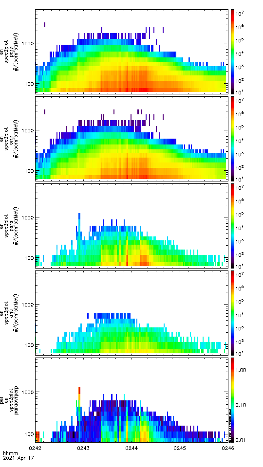
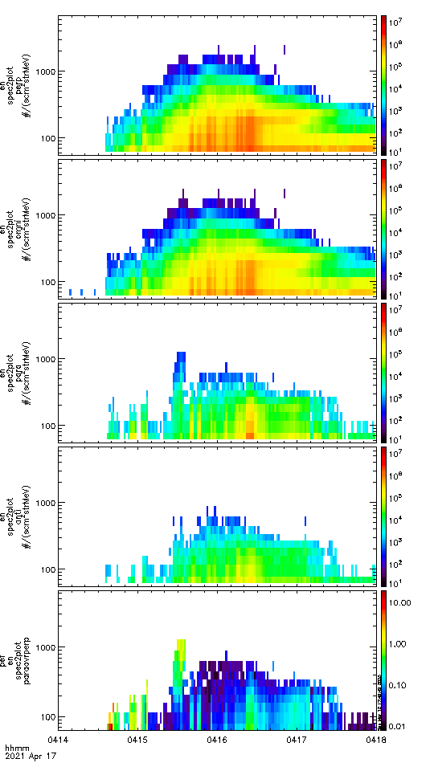
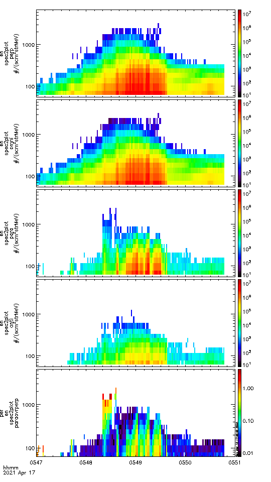

# | code-summary: Import all the libraries
# To make quarto render holoview properly, somehow you can not use `output: false` in the cell options
import logging
import altair as alt
import holoviews as hv
import hvplot.pandas # noqa
import hvplot.xarray # noqa
import numpy as np
import pandas as pd
import panel as pn
import pdpipe as pdp
import proplot as pplt
import pyspedas
import xarray as xr
from icecream import ic
from plasmapy.formulary import gyrofrequency
from pyspedas import tinterpol
from pytplot import get_data, options, split_vec, store_data, tplot, tplot_options
import pickle
import os
from utilities import *
logger = logging.getLogger()
pplt.rc["svg.fonttype"] = "none"
pplt.rc['formatter.timerotation'] = 0
pplt.rc['lines.linewidth'] = 1 # default: 1.5
journal = 'agu2'
tplot_refwidth = '128mm'
tplot_refheight = '27mm'
ax_format_args = { "margin": 0.1 , "xlocator": ('hour', range(0, 24, 3)) }Motivation
We observed three strong electron precipitation which lasted for 3 hours from ELFIN missions.
We wanted to investigate the cause of the precipitation.
  
In [58]:
In [5]:
PLOT = True
trange = ["2021-04-17T00:00:00", "2021-04-17T12:00:00"]Indices subplot
In [22]:
!wget -nc -O supermag_api.py https://supermag.jhuapl.edu/mag/lib/content/api/supermag-api.py
# -nc, --no-clobber skip downloads that would download to existing files (overwriting them)--2023-09-09 04:29:31-- https://supermag.jhuapl.edu/mag/lib/content/api/supermag-api.py
Resolving supermag.jhuapl.edu (supermag.jhuapl.edu)... 128.244.181.39
Connecting to supermag.jhuapl.edu (supermag.jhuapl.edu)|128.244.181.39|:443... connected.
HTTP request sent, awaiting response... 200 OK
Length: 25735 (25K)
Saving to: ‘supermag_api.py’
supermag_api.py 100%[===================>] 25.13K --.-KB/s in 0.1s
2023-09-09 04:29:31 (262 KB/s) - ‘supermag_api.py’ saved [25735/25735]
In [6]:
# code-summary: get indices from SuperMAG
from supermag_api import SuperMAGGetIndices
logon = 'Overhaul2993'
start = trange[0]
extent = (pd.Timestamp(trange[1]) - pd.Timestamp(trange[0])).total_seconds()
sm_indices = 'SME'
status, idxdata = SuperMAGGetIndices(logon, start, extent, sm_indices)
idxdata['tval'] = pd.to_datetime(idxdata['tval'], unit='s')
# convert idxdata into xarray
sme = xr.DataArray(
idxdata['SME'].values, coords = {'time': idxdata['tval'].values},
attrs={'long_name': 'SME', 'units': 'nT'}
)In [7]:
# code-summary: get indices from OMNI
varnames = ['SYM_H']
omni_vars = pyspedas.omni.data(trange=trange, varnames = varnames)
sym_h = get_data("SYM_H", xarray=True)
sym_h.attrs['long_name'] = 'SYM-H'
sym_h.attrs['units'] = 'nT'
# tplot(['SYM_H'], save_svg='../figures/omni_SYM_H')09-Sep-23 11:42:01: Downloading remote index: https://spdf.gsfc.nasa.gov/pub/data/omni/omni_cdaweb/hro2_1min/2021/
09-Sep-23 11:42:02: File is current: /Users/zijin/data/omni/hro2_1min/2021/omni_hro2_1min_20210401_v01.cdf
09-Sep-23 11:42:02: Time clip was applied to: SYM_HIn [57]:
def label_formatter(da: xr.DataArray):
if 'units' in da.attrs.keys() and da.units != "":
return f"{da.long_name} ({da.units})"
else:
return da.long_name
def plot_indices(save=False):
fname = 'indices_SYM_H_SME'
fig, ax = pplt.subplots(refwidth=tplot_refwidth, refheight=tplot_refheight)
ax.plot(sym_h, color='black')
temp_ax = ax.alty(color='red', label=label_formatter(sme))
temp_ax.plot(sme, color='red')
ax.format(**ax_format_args)
temp_ax.format(**ax_format_args)
if save:
fig.savefig(f'../figures/{fname}.svg')
fig.savefig(f'../figures/{fname}.pdf')
return fig
# fig = plot_indices()
fig = plot_indices(save=True){kind=link}
Detailed analysis of the April 17 2021 event
ELFIN observations of EMIC driven precipitations during >3hour interval
Two ELFIN satellites observation of EMIC-driven precipitation (where the precipitation flux surpasses the trapped flux in high-energy channels) over an interval exceeding three hours, from 02:42 to 05:53. The locations are projected in proximity to the L-Shell and MLT, using the Tsyganenko (1989) magnetic field model. Panels (a), (b), and (d) encapsulate data from ELFIN-B, while panel (c) features observations from ELFIN-A.
{kind=link}
ARASE Part
ARASE observation of whistler wave
Process data from the ERG satellite: retrieve data, interpolate to the same time as the spectra, and export tplot variables
ARASE electron and proton observations
In [38]:
trange = ["2021-04-17T00", "2021-04-17T12"]
vars = {
"erg_part_electron": "erg_mepe_l2_omniflux_FEDO",
"erg_part_proton": "erg_mepi_l2_omniflux_FODO",
"erg_bvec": "erg_mgf_l2_mag_8sec_gsm",
"erg_mec_mlt": "erg_orb_l2_pos_mlt",
"erg_mec_l": "erg_orb_l2_pos_Lm",
}
pyspedas.erg.mepe(trange=trange, time_clip=True, ror=False)
pyspedas.erg.mepi_nml(trange=trange, time_clip=True, ror=False)
pyspedas.erg.mgf(trange=trange, time_clip=True, ror=False)
pyspedas.erg.orb(trange=trange, time_clip=True, ror=False, varformat="*pos*")
split_vec(
"erg_orb_l2_pos_rmlatmlt", new_name="erg_orb_l2_pos_", suffix=["r", "mlat", "mlt"]
)
split_vec("erg_orb_l2_pos_Lm", suffix=["_90", "_60", "_30"])09-Sep-23 12:04:36: Downloading remote index: https://ergsc.isee.nagoya-u.ac.jp/data/ergsc/satellite/erg/mepe/l2/omniflux/2021/04/
09-Sep-23 12:04:37: File is current: /Users/zijin/data/ergsc/satellite/erg/mepe/l2/omniflux/2021/04/erg_mepe_l2_omniflux_20210417_v01_02.cdf
09-Sep-23 12:04:37: /Users/zijin/mambaforge/envs/cool_space_science/lib/python3.10/site-packages/pytplot/importers/cdf_to_tplot.py:310: FutureWarning: elementwise comparison failed; returning scalar instead, but in the future will perform elementwise comparison
if ydata[ydata == var_atts["FILLVAL"]].size != 0:
09-Sep-23 12:04:37: Time clip was applied to: erg_mepe_l2_omniflux_FEDO
09-Sep-23 12:04:37: Downloading remote index: https://ergsc.isee.nagoya-u.ac.jp/data/ergsc/satellite/erg/mepi/l2/omniflux/2021/04/
09-Sep-23 12:04:39: File is current: /Users/zijin/data/ergsc/satellite/erg/mepi/l2/omniflux/2021/04/erg_mepi_l2_omniflux_20210417_v02_01.cdf
09-Sep-23 12:04:39: Time clip was applied to: erg_mepi_l2_omniflux_FPDO
09-Sep-23 12:04:39: Time clip was applied to: erg_mepi_l2_omniflux_FHE2DO
09-Sep-23 12:04:39: Time clip was applied to: erg_mepi_l2_omniflux_FHEDO
09-Sep-23 12:04:39: Time clip was applied to: erg_mepi_l2_omniflux_FOPPDO
09-Sep-23 12:04:39: Time clip was applied to: erg_mepi_l2_omniflux_FODO
09-Sep-23 12:04:39: Time clip was applied to: erg_mepi_l2_omniflux_FO2PDO
09-Sep-23 12:04:39: Time clip was applied to: erg_mepi_l2_omniflux_FPDO_tof
09-Sep-23 12:04:39: Time clip was applied to: erg_mepi_l2_omniflux_FHE2DO_tof
09-Sep-23 12:04:39: Time clip was applied to: erg_mepi_l2_omniflux_FHEDO_tof
09-Sep-23 12:04:39: Time clip was applied to: erg_mepi_l2_omniflux_FOPPDO_tof
09-Sep-23 12:04:39: Time clip was applied to: erg_mepi_l2_omniflux_FODO_tof
09-Sep-23 12:04:39: Time clip was applied to: erg_mepi_l2_omniflux_FO2PDO_tof
09-Sep-23 12:04:39: Downloading remote index: https://ergsc.isee.nagoya-u.ac.jp/data/ergsc/satellite/erg/mgf/l2/8sec/2021/04/
09-Sep-23 12:04:39: File is current: /Users/zijin/data/ergsc/satellite/erg/mgf/l2/8sec/2021/04/erg_mgf_l2_8sec_20210417_v04.04.cdf
09-Sep-23 12:04:40: Time clip was applied to: erg_mgf_l2_mag_8sec_dsi
09-Sep-23 12:04:40: Time clip was applied to: erg_mgf_l2_mag_8sec_gse
09-Sep-23 12:04:40: Time clip was applied to: erg_mgf_l2_mag_8sec_gsm
09-Sep-23 12:04:40: Time clip was applied to: erg_mgf_l2_mag_8sec_sm
09-Sep-23 12:04:40: Time clip was applied to: erg_mgf_l2_magt_8sec
09-Sep-23 12:04:40: Time clip was applied to: erg_mgf_l2_rmsd_8sec_dsi
09-Sep-23 12:04:40: Time clip was applied to: erg_mgf_l2_rmsd_8sec_gse
09-Sep-23 12:04:40: Time clip was applied to: erg_mgf_l2_rmsd_8sec_gsm
09-Sep-23 12:04:40: Time clip was applied to: erg_mgf_l2_rmsd_8sec_sm
09-Sep-23 12:04:40: Time clip was applied to: erg_mgf_l2_rmsd_8sec
09-Sep-23 12:04:40: Time clip was applied to: erg_mgf_l2_n_rmsd_8sec
09-Sep-23 12:04:40: Time clip was applied to: erg_mgf_l2_dyn_rng_8sec
09-Sep-23 12:04:40: Time clip was applied to: erg_mgf_l2_quality_8sec
09-Sep-23 12:04:40: Time clip was applied to: erg_mgf_l2_quality_8sec_gc
09-Sep-23 12:04:40: Time clip was applied to: erg_mgf_l2_igrf_8sec_dsi
09-Sep-23 12:04:40: Time clip was applied to: erg_mgf_l2_igrf_8sec_gse
09-Sep-23 12:04:40: Time clip was applied to: erg_mgf_l2_igrf_8sec_gsm
09-Sep-23 12:04:40: Time clip was applied to: erg_mgf_l2_igrf_8sec_sm
09-Sep-23 12:04:40: Downloading remote index: https://ergsc.isee.nagoya-u.ac.jp/data/ergsc/satellite/erg/orb/def/2021/
09-Sep-23 12:04:42: File is current: /Users/zijin/data/ergsc/satellite/erg/orb/def/2021/erg_orb_l2_20210417_v03.cdf
09-Sep-23 12:04:42: /Users/zijin/mambaforge/envs/cool_space_science/lib/python3.10/site-packages/pytplot/importers/cdf_to_tplot.py:310: FutureWarning: elementwise comparison failed; returning scalar instead, but in the future will perform elementwise comparison
if ydata[ydata == var_atts["FILLVAL"]].size != 0:
09-Sep-23 12:04:42: Time clip was applied to: erg_orb_l2_pos_llr
09-Sep-23 12:04:42: Time clip was applied to: erg_orb_l2_pos_gse
09-Sep-23 12:04:42: Time clip was applied to: erg_orb_l2_pos_gsm
09-Sep-23 12:04:42: Time clip was applied to: erg_orb_l2_pos_sm
09-Sep-23 12:04:42: Time clip was applied to: erg_orb_l2_pos_rmlatmlt
09-Sep-23 12:04:42: Time clip was applied to: erg_orb_l2_pos_eq
09-Sep-23 12:04:42: Time clip was applied to: erg_orb_l2_pos_iono_north
09-Sep-23 12:04:42: Time clip was applied to: erg_orb_l2_pos_iono_south
09-Sep-23 12:04:42: Time clip was applied to: erg_orb_l2_pos_blocal
09-Sep-23 12:04:42: Time clip was applied to: erg_orb_l2_pos_blocal_mag
09-Sep-23 12:04:42: Time clip was applied to: erg_orb_l2_pos_beq
09-Sep-23 12:04:42: Time clip was applied to: erg_orb_l2_pos_beq_mag
09-Sep-23 12:04:42: Time clip was applied to: erg_orb_l2_pos_Lm
09-Sep-23 12:04:42: erg_orb_l2_vel_gse is currently not in pytplot.
09-Sep-23 12:04:42: erg_orb_l2_vel_gsm is currently not in pytplot.
09-Sep-23 12:04:42: erg_orb_l2_vel_sm is currently not in pytplot.
09-Sep-23 12:04:42: erg_orb_l2_vel_gse is currently not in pytplot.
09-Sep-23 12:04:42: erg_orb_l2_vel_gsm is currently not in pytplot.
09-Sep-23 12:04:42: erg_orb_l2_vel_sm is currently not in pytplot.
02-Jul-23 14:43:57: Downloading remote index: https://ergsc.isee.nagoya-u.ac.jp/data/ergsc/satellite/erg/mepe/l2/omniflux/2021/04/
02-Jul-23 14:43:58: File is current: /Users/zijin/data/ergsc/satellite/erg/mepe/l2/omniflux/2021/04/erg_mepe_l2_omniflux_20210417_v01_02.cdf
02-Jul-23 14:43:58: /Users/zijin/mambaforge/envs/cool_space_science/lib/python3.10/site-packages/pytplot/importers/cdf_to_tplot.py:310: FutureWarning: elementwise comparison failed; returning scalar instead, but in the future will perform elementwise comparison
if ydata[ydata == var_atts["FILLVAL"]].size != 0:
02-Jul-23 14:43:58: Time clip was applied to: erg_mepe_l2_omniflux_FEDO
02-Jul-23 14:43:58: Downloading remote index: https://ergsc.isee.nagoya-u.ac.jp/data/ergsc/satellite/erg/mepi/l2/omniflux/2021/04/
02-Jul-23 14:43:59: File is current: /Users/zijin/data/ergsc/satellite/erg/mepi/l2/omniflux/2021/04/erg_mepi_l2_omniflux_20210417_v02_01.cdf
02-Jul-23 14:43:59: Time clip was applied to: erg_mepi_l2_omniflux_FPDO
02-Jul-23 14:43:59: Time clip was applied to: erg_mepi_l2_omniflux_FHE2DO
02-Jul-23 14:43:59: Time clip was applied to: erg_mepi_l2_omniflux_FHEDO
02-Jul-23 14:43:59: Time clip was applied to: erg_mepi_l2_omniflux_FOPPDO
02-Jul-23 14:43:59: Time clip was applied to: erg_mepi_l2_omniflux_FODO
02-Jul-23 14:43:59: Time clip was applied to: erg_mepi_l2_omniflux_FO2PDO
02-Jul-23 14:43:59: Time clip was applied to: erg_mepi_l2_omniflux_FPDO_tof
02-Jul-23 14:43:59: Time clip was applied to: erg_mepi_l2_omniflux_FHE2DO_tof
02-Jul-23 14:43:59: Time clip was applied to: erg_mepi_l2_omniflux_FHEDO_tof
02-Jul-23 14:43:59: Time clip was applied to: erg_mepi_l2_omniflux_FOPPDO_tof
02-Jul-23 14:43:59: Time clip was applied to: erg_mepi_l2_omniflux_FODO_tof
02-Jul-23 14:43:59: Time clip was applied to: erg_mepi_l2_omniflux_FO2PDO_tof
02-Jul-23 14:43:59: Downloading remote index: https://ergsc.isee.nagoya-u.ac.jp/data/ergsc/satellite/erg/mgf/l2/8sec/2021/04/
02-Jul-23 14:44:00: File is current: /Users/zijin/data/ergsc/satellite/erg/mgf/l2/8sec/2021/04/erg_mgf_l2_8sec_20210417_v04.04.cdf
02-Jul-23 14:44:00: Time clip was applied to: erg_mgf_l2_mag_8sec_dsi
02-Jul-23 14:44:00: Time clip was applied to: erg_mgf_l2_mag_8sec_gse
02-Jul-23 14:44:00: Time clip was applied to: erg_mgf_l2_mag_8sec_gsm
02-Jul-23 14:44:00: Time clip was applied to: erg_mgf_l2_mag_8sec_sm
02-Jul-23 14:44:00: Time clip was applied to: erg_mgf_l2_magt_8sec
02-Jul-23 14:44:00: Time clip was applied to: erg_mgf_l2_rmsd_8sec_dsi
02-Jul-23 14:44:00: Time clip was applied to: erg_mgf_l2_rmsd_8sec_gse
02-Jul-23 14:44:00: Time clip was applied to: erg_mgf_l2_rmsd_8sec_gsm
02-Jul-23 14:44:00: Time clip was applied to: erg_mgf_l2_rmsd_8sec_sm
02-Jul-23 14:44:00: Time clip was applied to: erg_mgf_l2_rmsd_8sec
02-Jul-23 14:44:00: Time clip was applied to: erg_mgf_l2_n_rmsd_8sec
02-Jul-23 14:44:00: Time clip was applied to: erg_mgf_l2_dyn_rng_8sec
02-Jul-23 14:44:00: Time clip was applied to: erg_mgf_l2_quality_8sec
02-Jul-23 14:44:00: Time clip was applied to: erg_mgf_l2_quality_8sec_gc
02-Jul-23 14:44:00: Time clip was applied to: erg_mgf_l2_igrf_8sec_dsi
02-Jul-23 14:44:00: Time clip was applied to: erg_mgf_l2_igrf_8sec_gse
02-Jul-23 14:44:00: Time clip was applied to: erg_mgf_l2_igrf_8sec_gsm
02-Jul-23 14:44:00: Time clip was applied to: erg_mgf_l2_igrf_8sec_sm
02-Jul-23 14:44:00: Downloading remote index: https://ergsc.isee.nagoya-u.ac.jp/data/ergsc/satellite/erg/orb/def/2021/
02-Jul-23 14:44:01: File is current: /Users/zijin/data/ergsc/satellite/erg/orb/def/2021/erg_orb_l2_20210417_v03.cdf
02-Jul-23 14:44:01: /Users/zijin/mambaforge/envs/cool_space_science/lib/python3.10/site-packages/pytplot/importers/cdf_to_tplot.py:310: FutureWarning: elementwise comparison failed; returning scalar instead, but in the future will perform elementwise comparison
if ydata[ydata == var_atts["FILLVAL"]].size != 0:
02-Jul-23 14:44:02: Time clip was applied to: erg_orb_l2_pos_llr
02-Jul-23 14:44:02: Time clip was applied to: erg_orb_l2_pos_gse
02-Jul-23 14:44:02: Time clip was applied to: erg_orb_l2_pos_gsm
02-Jul-23 14:44:02: Time clip was applied to: erg_orb_l2_pos_sm
02-Jul-23 14:44:02: Time clip was applied to: erg_orb_l2_pos_rmlatmlt
02-Jul-23 14:44:02: Time clip was applied to: erg_orb_l2_pos_eq
02-Jul-23 14:44:02: Time clip was applied to: erg_orb_l2_pos_iono_north
02-Jul-23 14:44:02: Time clip was applied to: erg_orb_l2_pos_iono_south
02-Jul-23 14:44:02: Time clip was applied to: erg_orb_l2_pos_blocal
02-Jul-23 14:44:02: Time clip was applied to: erg_orb_l2_pos_blocal_mag
02-Jul-23 14:44:02: Time clip was applied to: erg_orb_l2_pos_beq
02-Jul-23 14:44:02: Time clip was applied to: erg_orb_l2_pos_beq_mag
02-Jul-23 14:44:02: Time clip was applied to: erg_orb_l2_pos_Lm
02-Jul-23 14:44:02: erg_orb_l2_vel_gse is currently not in pytplot.
02-Jul-23 14:44:02: erg_orb_l2_vel_gsm is currently not in pytplot.
02-Jul-23 14:44:02: erg_orb_l2_vel_sm is currently not in pytplot.
02-Jul-23 14:44:02: erg_orb_l2_vel_gse is currently not in pytplot.
02-Jul-23 14:44:02: erg_orb_l2_vel_gsm is currently not in pytplot.
02-Jul-23 14:44:02: erg_orb_l2_vel_sm is currently not in pytplot.['erg_orb_l2_pos_Lm_90', 'erg_orb_l2_pos_Lm_60', 'erg_orb_l2_pos_Lm_30']In [9]:
tplot(['erg_mgf_l2_mag_8sec_dsi', 'erg_mgf_l2_mag_8sec_gsm', 'erg_mgf_l2_rmsd_8sec_gsm','erg_mgf_l2_igrf_8sec_gsm']){kind=link}
In [10]:
tplot(list(vars.values()))
In [42]:
erg_part_electron = get_data("erg_mepe_l2_omniflux_FEDO", xarray=True)
erg_part_proton = get_data("erg_mepi_l2_omniflux_FODO", xarray=True)
erg_bvec = get_data("erg_mgf_l2_mag_8sec_gsm", xarray=True)
erg_mec_mlt = get_data("erg_orb_l2_pos_mlt", xarray=True)
erg_mec_l = get_data("erg_orb_l2_pos_Lm_90", xarray=True)
# update variable attributes
erg_part_electron.attrs.update({
"long_name": "ARASE Electron",
"labels": [f"{erg:0.0f} keV" for erg in erg_part_electron.spec_bins.values],
# "units": r"$1/s/cm^2/sr/keV$",
})
erg_part_proton.attrs.update({
"long_name": "ARASE Proton",
"labels": [f"{erg:0.0f} keV" for erg in erg_part_proton.spec_bins.values],
# "units": r"$1/s/cm^2/sr/keV$"
})
erg_bvec.attrs.update({
"long_name": "ARASE B",
"units": "nT",
"labels": [r"$B_x$", r"$B_y$", r"$B_z$"],
})
erg_mec_mlt.attrs.update({
"long_name": "MLT",
})
erg_mec_l.attrs.update({
"long_name": "L shell",
})In [61]:
def plot_erg_mep(type=None, save=False):
fname = "arase_mep"
if type == "poster":
n = 3
fname = f"{fname}_poster"
else:
n = 4
# fig, axs = pplt.subplots(
# ncols=1, nrows=n, refaspect=n, refwidth=2.5 * n, sharey=False
# )
fig, axs = pplt.subplots(
ncols=1, nrows=n,
refwidth=tplot_refwidth, refheight=tplot_refheight,
sharey=False
)
axs[0].plot(
erg_part_electron[:, ::3],
cycle="darkred",
labels=erg_part_electron.attrs["labels"][::3],
)
axs[1].plot(
erg_part_proton[:, 3:-3:2],
cycle="darkblue",
labels=erg_part_proton.attrs["labels"][3:-3:2],
)
axs[n - 1].plot(erg_mec_mlt, color="black")
temp_ax = axs[n - 1].alty(color="red", label=erg_mec_l.attrs["long_name"])
temp_ax.plot(erg_mec_l, color="red")
axs[0].format(yscale="log", yformatter="log", ymin=1e3)
axs[0].legend(loc="right", ncols=1, frame=False)
axs[1].format(yscale="log", yformatter="log")
axs[1].legend(loc="right", ncols=1, frame=False)
axs.format(**ax_format_args)
temp_ax.format(**ax_format_args)
if not type == "poster":
axs[2].plot(
erg_bvec,
# cycle=["black", "red", "blue"],
labels=erg_bvec.attrs["labels"],
ds["erg_mgf"],
# cycle=["black", "red", "blue"],
labels=ds["erg_mgf"].attrs["labels"],
)
axs[2].format(ylim=(-3e2, 3e2))
axs[2].legend(loc="right", ncols=1, frame=False)
if save:
fig.savefig(f"../figures/{fname}.svg")
fig.savefig(f"../figures/{fname}.pdf")
return fig
# fig = plot_erg_mep()
fig = plot_erg_mep(save=True)
# fig = plot_erg_mep(type="poster", save=True)
# fig = plot_erg_mep(type="poster", save=True)
fig = plot_erg_mep(){kind=link}
Investigate changing fo high energy fluxes over time from ARASE
In [3]:
trange = ["2021-04-16", "2021-04-18"]
pyspedas.erg.xep(trange=trange, time_clip=True, ror=False)
pyspedas.erg.orb(trange=trange, time_clip=True, ror=False)
# xep: 'erg_xep_l2_FEDO_SSD'
# orb: ['erg_orb_l2_pos_llr',
# 'erg_orb_l2_pos_gse',
# 'erg_orb_l2_pos_gsm',
# 'erg_orb_l2_pos_sm',
# 'erg_orb_l2_pos_rmlatmlt',
# 'erg_orb_l2_pos_eq',
# 'erg_orb_l2_pos_iono_north',
# 'erg_orb_l2_pos_iono_south',
# 'erg_orb_l2_pos_blocal',
# 'erg_orb_l2_pos_blocal_mag',
# 'erg_orb_l2_pos_beq',
# 'erg_orb_l2_pos_beq_mag',
# 'erg_orb_l2_pos_Lm',
# 'erg_orb_l2_vel_gse',
# 'erg_orb_l2_vel_gsm',
# 'erg_orb_l2_vel_sm',
# 'erg_orb_l2_spn_num',
# 'erg_orb_l2_man_prep_flag',
# 'erg_orb_l2_man_on_flag',
# 'erg_orb_l2_eclipse_flag']21-Jun-23 21:06:48: Downloading remote index: https://ergsc.isee.nagoya-u.ac.jp/data/ergsc/satellite/erg/xep/l2/omniflux/2021/04/
21-Jun-23 21:06:48: File is current: /Users/zijin/data/ergsc/satellite/erg/xep/l2/omniflux/2021/04/erg_xep_l2_omniflux_20210416_v01_00.cdf
21-Jun-23 21:06:49: File is current: /Users/zijin/data/ergsc/satellite/erg/xep/l2/omniflux/2021/04/erg_xep_l2_omniflux_20210417_v01_00.cdf
21-Jun-23 21:06:49: /Users/zijin/mambaforge/envs/cool_space_science/lib/python3.10/site-packages/pytplot/importers/cdf_to_tplot.py:310: FutureWarning: elementwise comparison failed; returning scalar instead, but in the future will perform elementwise comparison
if ydata[ydata == var_atts["FILLVAL"]].size != 0:
21-Jun-23 21:06:49: Downloading remote index: https://ergsc.isee.nagoya-u.ac.jp/data/ergsc/satellite/erg/orb/def/2021/
21-Jun-23 21:06:50: File is current: /Users/zijin/data/ergsc/satellite/erg/orb/def/2021/erg_orb_l2_20210416_v03.cdf
21-Jun-23 21:06:51: File is current: /Users/zijin/data/ergsc/satellite/erg/orb/def/2021/erg_orb_l2_20210417_v03.cdf
21-Jun-23 21:06:51: Time clip returns full data set.
21-Jun-23 21:06:51: Time clip returns full data set.
21-Jun-23 21:06:51: Time clip returns full data set.
21-Jun-23 21:06:51: Time clip returns full data set.
21-Jun-23 21:06:51: Time clip returns full data set.
21-Jun-23 21:06:51: Time clip returns full data set.
21-Jun-23 21:06:51: Time clip returns full data set.
21-Jun-23 21:06:51: Time clip returns full data set.
21-Jun-23 21:06:51: Time clip returns full data set.
21-Jun-23 21:06:51: Time clip returns full data set.
21-Jun-23 21:06:51: Time clip returns full data set.
21-Jun-23 21:06:51: Time clip returns full data set.
21-Jun-23 21:06:51: Time clip returns full data set.
21-Jun-23 21:06:51: Time clip returns full data set.
21-Jun-23 21:06:51: Time clip returns full data set.
21-Jun-23 21:06:51: Time clip returns full data set.
21-Jun-23 21:06:51: Time clip returns full data set.
21-Jun-23 21:06:51: Time clip returns full data set.
21-Jun-23 21:06:51: Time clip returns full data set.
21-Jun-23 21:06:51: Time clip returns full data set.['erg_orb_l2_pos_llr',
'erg_orb_l2_pos_gse',
'erg_orb_l2_pos_gsm',
'erg_orb_l2_pos_sm',
'erg_orb_l2_pos_rmlatmlt',
'erg_orb_l2_pos_eq',
'erg_orb_l2_pos_iono_north',
'erg_orb_l2_pos_iono_south',
'erg_orb_l2_pos_blocal',
'erg_orb_l2_pos_blocal_mag',
'erg_orb_l2_pos_beq',
'erg_orb_l2_pos_beq_mag',
'erg_orb_l2_pos_Lm',
'erg_orb_l2_vel_gse',
'erg_orb_l2_vel_gsm',
'erg_orb_l2_vel_sm',
'erg_orb_l2_spn_num',
'erg_orb_l2_man_prep_flag',
'erg_orb_l2_man_on_flag',
'erg_orb_l2_eclipse_flag']{kind=link}
{kind=link}
In [11]:
split_vec(
"erg_orb_l2_pos_rmlatmlt", new_name="erg_orb_l2_pos_", suffix=["r", "mlat", "mlt"]
)
erg_orb_Lm = get_data("erg_orb_l2_pos_Lm", xarray=True)
erg_orb_mlat = get_data("erg_orb_l2_pos_mlat", xarray=True)
erg_orb_mlt = get_data("erg_orb_l2_pos_mlt", xarray=True)
erg_xep = get_data("erg_xep_l2_FEDO_SSD", xarray=True)In [12]:
def time_group(time):
"""Group data points by time"""
# Set a threshold time interval for grouping data
time_threshold = pd.Timedelta(minutes=30)
# Compute the time intervals between each data point
time_delta = time.diff()
# Create a boolean mask for identifying the start of each group
group_start_mask = (time_delta > time_threshold) | time_delta.isnull()
# Assign a group ID to each data point based on the start of each group
return group_start_mask.cumsum()
erg_orb_pipe = pdp.PdPipeline(
[
# only keep data where Lm > 5 and 10 > mlat > -10
pdp.keep_rows_where["erg_orb_l2_pos_Lm"] > 4.5,
pdp.keep_rows_where["erg_orb_l2_pos_Lm"] < 5.5,
pdp.keep_rows_where["erg_orb_l2_pos_mlat"] > -10,
pdp.keep_rows_where["erg_orb_l2_pos_mlat"] < 10,
# group data by time
pdp.ColByFrameFunc("group_id", lambda df: time_group(df.index.to_series())),
]
)
erg_orb_df = xr.merge([erg_orb_Lm[:, 0], erg_orb_mlat, erg_orb_mlt]).to_dataframe()
erg_orb_df_filtered = erg_orb_pipe.apply(erg_orb_df)In [13]:
erg_orb_df.hvplot.scatter(
x="erg_orb_l2_pos_mlt", y="erg_orb_l2_pos_mlat"
) * erg_orb_df_filtered.hvplot.scatter(x="erg_orb_l2_pos_mlt", y="erg_orb_l2_pos_mlat")
erg_orb_df.hvplot(
x="time", y=["erg_orb_l2_pos_Lm", "erg_orb_l2_pos_mlat", "erg_orb_l2_pos_mlt"]
) * erg_orb_df_filtered.hvplot.scatter(
x="time", y=["erg_orb_l2_pos_Lm", "erg_orb_l2_pos_mlat", "erg_orb_l2_pos_mlt"]
)In [14]:
erg_orb_tgroup = (
erg_orb_df_filtered.reset_index()
.groupby("group_id")
.agg({"time": ["min", "max"]})
.to_numpy()
)
erg_xep_df = erg_xep.to_dataframe()
for tr_min, tr_max in erg_orb_tgroup:
erg_xep_df.loc[tr_min:tr_max, "trange"] = "{}, {}".format(
tr_min.astype("datetime64[h]"), tr_max.astype("datetime64[h]")
)In [15]:
# erg_orb_tgroup = (
# erg_orb_df_filtered.reset_index()
# .groupby("group_id")
# .agg({"time": ["min", "max"]})
# )
# bins = pd.IntervalIndex.from_arrays(erg_orb_tgroup['time','min'],erg_orb_tgroup['time','max'])
# erg_xep = erg_xep.assign_coords(trange=("time", pd.cut(erg_xep['time'], bins)))
# erg_xep_df['trange'] = pd.cut(erg_xep_df.reset_index(level='v_dim').index, bins)In [16]:
vatt = erg_xep.attrs["CDF"]["VATT"]
chart01 = (
alt.Chart(erg_xep_df.dropna())
.mark_line(point=True)
.encode(
x=alt.X("spec_bins", title="Energy [keV]"),
y=alt.Y(
"mean(erg_xep_l2_FEDO_SSD)",
scale=alt.Scale(type="log"),
title=f"{vatt['LABLAXIS']} [{vatt['UNITS']}]",
),
color="trange",
)
.properties(title=f"{vatt['CATDESC']}")
)
chart02 = (
alt.Chart(erg_xep_df.dropna())
.mark_line(point=True)
.encode(
x=alt.X("spec_bins", title="Energy [keV]"),
y=alt.Y(
"mean(erg_xep_l2_FEDO_SSD)", title=f"{vatt['LABLAXIS']} [{vatt['UNITS']}]"
),
color="trange",
)
.properties(title=f"{vatt['CATDESC']}")
)
display(chart01, chart02)